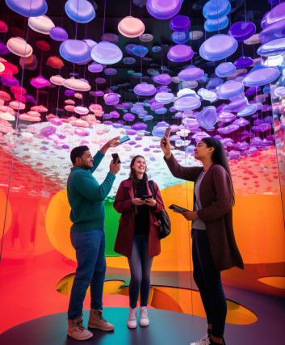

Desarrollo de aplicaciones de realidad aumentada para exposiciones de arte
Desarrollé aplicaciones de realidad aumentada para exposiciones de arte que permiten a los visitantes interactuar con las obras de arte de una manera nueva y emocionante.

Desarrollo de aplicaciones de realidad aumentada para exposiciones de historia
Desarrollé aplicaciones de realidad aumentada para exposiciones de historia que permiten a los visitantes explorar eventos históricos y lugares de una manera más inmersiva.

Desarrollo de aplicaciones de realidad aumentada para exposiciones de ciencia
Desarrollé aplicaciones de realidad aumentada para exposiciones de ciencia que permiten a los visitantes interactuar con modelos 3D de objetos científicos y conceptos abstractos en tiempo real.